Giới thiệu về hệ điều hành iOS
iOS là một hệ điều hành điện thoại di động được phát triển bởi Apple và phân phối độc quyền cho phần cứng của Apple. Ban đầu, iOS được công bố năm 2007 cho iPhone, sau đó được mở rộng để hỗ trợ các thiết bị khác của Apple như iPod Touch (tháng 9 năm 2007), iPad (tháng 1 năm 2010), iPad Mini (tháng 11 năm 2012) và thế hệ thứ hai của Apple Ttivi trở đi (tháng 9 năm 2010).
Đến cuối năm 2011, iOS chiếm 60% thị phần điện thoại thông minh và máy tính bảng. Cuối năm 2012, iOS chiếm 21% thị phần hệ điều hành điện thoại thông minh trên thị trường và 43,6% thị trường hệ điều hành máy tính bảng. Và đến tháng 6 năm 2014, App Store của Apple chứa hơn 1.200.000 ứng dụng iOS, và được tải về hơn 60 tỷ lần.
Giao diện người dùng của iOS được dựa trên khái niệm về thao tác trực tiếp bằng tay, sử dụng các cử chỉ đa cảm ứng. Các yếu tố giao diện điều khiển bao gồm các thanh trượt, công tắc, và các nút. Tương tác với các hệ điều hành bao gồm các cử chỉ như chạm, trượt, vuốt.
Phiên bản mới của iOS được phát hành hàng năm. Bản mới nhất hiện tại là iOS 8.1.2, được phát hành vào ngày 09/12/2014.
Một đặc trưng của hệ điều hành iOS đó là Apple hạn chế việc cài ứng dụng từ bên thứ ba (ngoài AppStore) vào thiết bị, việc này có thể khiến iPhone của bạn mắc phải một số lỗi và không còn mượt mà nữa.
Sự phát triển của hệ điều hành iOS
-
29/6/2007
iPhone OS 1
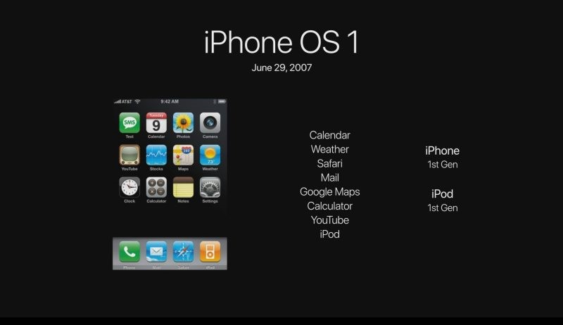
Được sử dụng trong iPhone thế hệ đầu tiên và iPod thế hệ đầu tiên.
-
11/7/2008
iPhone OS 2
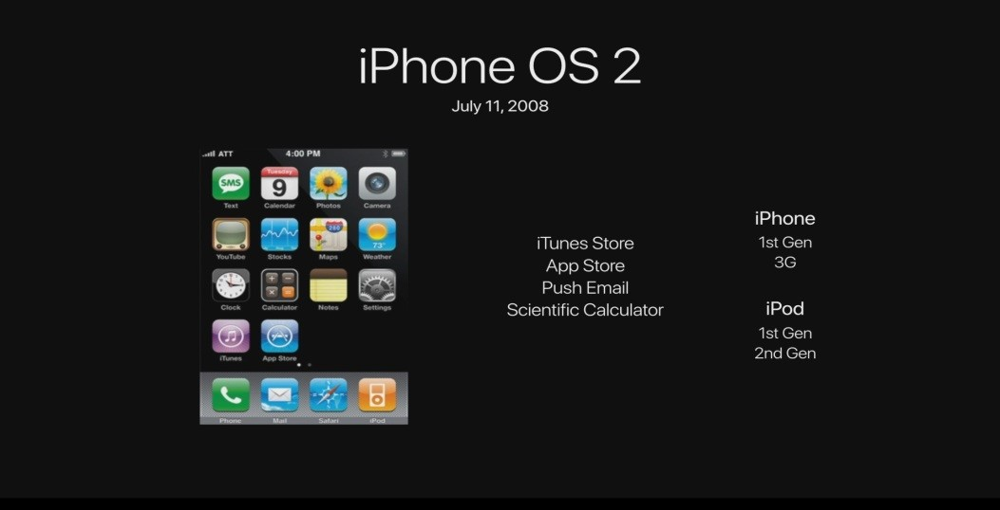
Được sử dụng trong thế hệ đầu tiên iPhone và iPhone 3G, iPod thế hệ 1 và thế hệ thứ hai, có iTunes Store và App Store và các ứng dụng khác
-
17/6/2009
iPhone OS 3
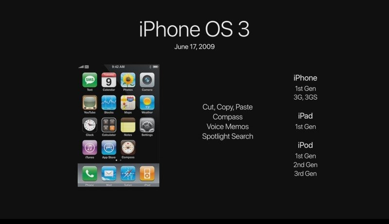
Được sử dụng cho iPhone 1, 3G, 3GS và được thêm vào thế hệ iPad và iPod 1 ~ 3 thế hệ đầu tiên, hệ thống đã thêm các chức năng như cắt, sao chép và dán.
-
17/6/2010
iOS 4
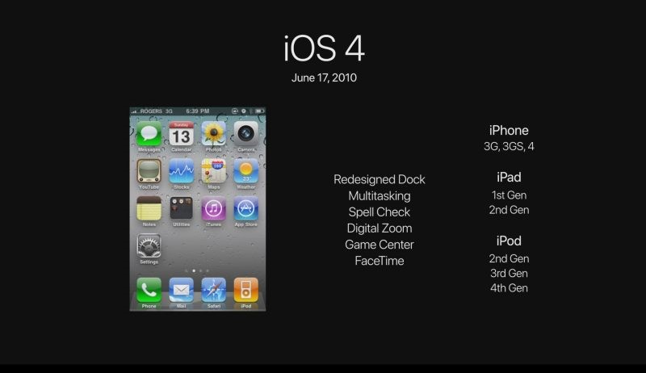
iPhone 3G, 3GS, 4, iPad 1 ~ 2, iPod 1 ~ 4, có thêm FaceTime và GameCenter và các ứng dụng khác.
-
12/10/2011
iOS 5
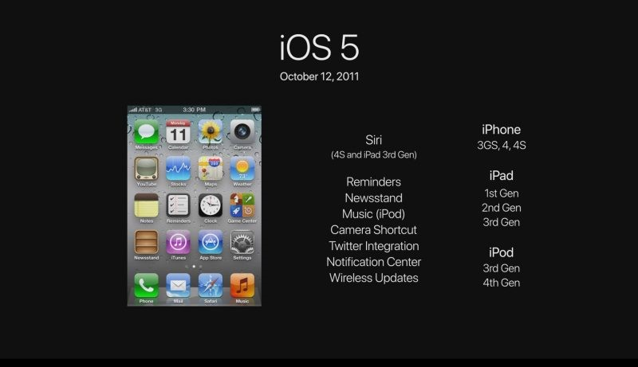
Được sử dụng cho iPhone 3GS, 4, 4S, iPad 1 ~ 3, iPod 3 ~ 4, hệ thống kết hợp với trợ lý Siri và các chức năng khác.
-
19/9/2012
iOS 6
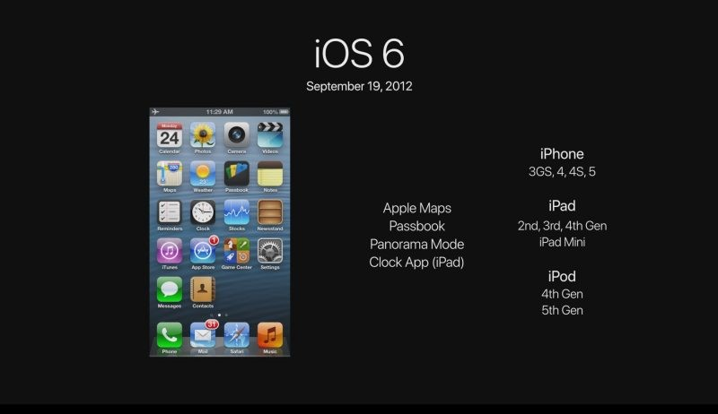
Được sử dụng cho iPhone 3GS, 4, 4S, 5, iPad 2 ~ 4 thế hệ iPad Mini , iPod 4 ~ 5, hệ thống có thêm Apple Maps và các ứng dụng khác.
-
18/9/2013
iOS 7
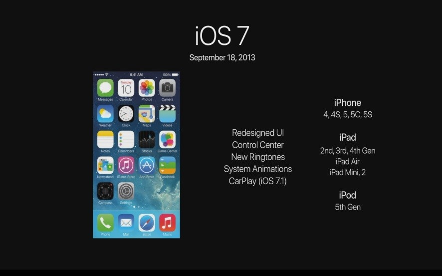
Được sử dụng trên iPhone 4, 4S, 5, 5C, 5S, iPad 2 ~ 4 thế hệ Air iPad Mini 1 ~ 2. Hệ thống này được lập trình và thêm vào giao diện người dùng của trung tâm điều khiển và các chức năng như CarPlay.
-
17/9/2014
iOS 8
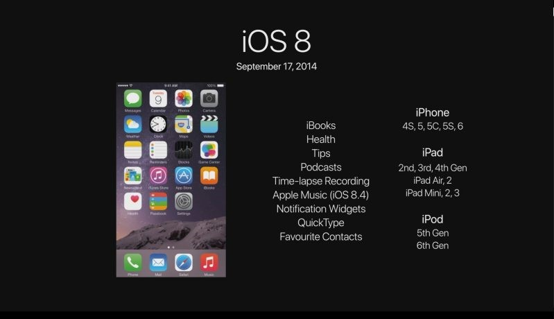
Dành cho iPhone 4S, 5, 5C, 5S, 6, iPad 2 ~ 4 thế hệ Air 1 ~ 2 thế hệ Mini 1 ~ 3 thế hệ, iPod 5 ~ 6, có thêm Apple Music, sức khỏe và các ứng dụng khác.
-
16/9/2015
iOS 9
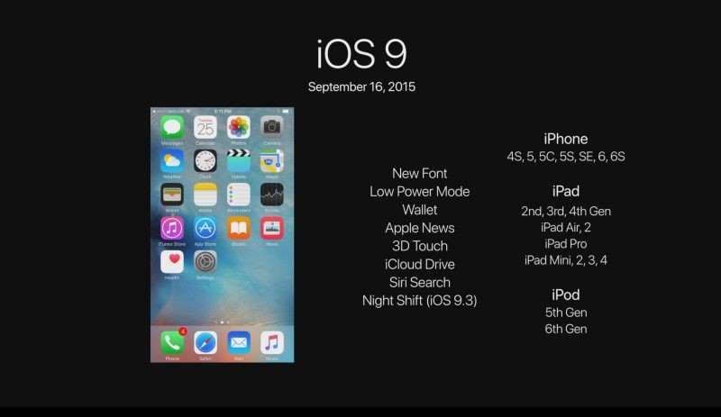
Dành cho iPhone 4S, 5, 5C, 5S, 6, 6S, iPad 2 ~ 4 thế hệ Air 1 ~ 2 thế hệ Pro 1 thế hệ Mini 1 ~ 3 thế hệ, iPod 5 ~ 6, hệ thống tiết kiệm pin, ví, 3D Các tính năng mới như Touch.
-
13/9/2016
iOS 10
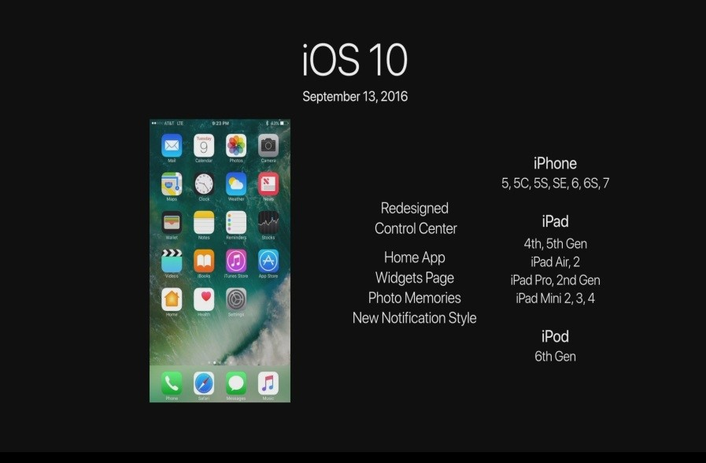
Được sử dụng trên iPhone 5, 5C, 5S, 6, 6S, 7, iPad 4 ~ 5, Air 1 ~ 2, Pro 1 ~ 2, Mini 2 ~ 4, thế hệ iPod 6, hệ thống đã thêm HOME APP, trang thời tiết Và các chức năng khác.
-
19/9/2017
iOS 11
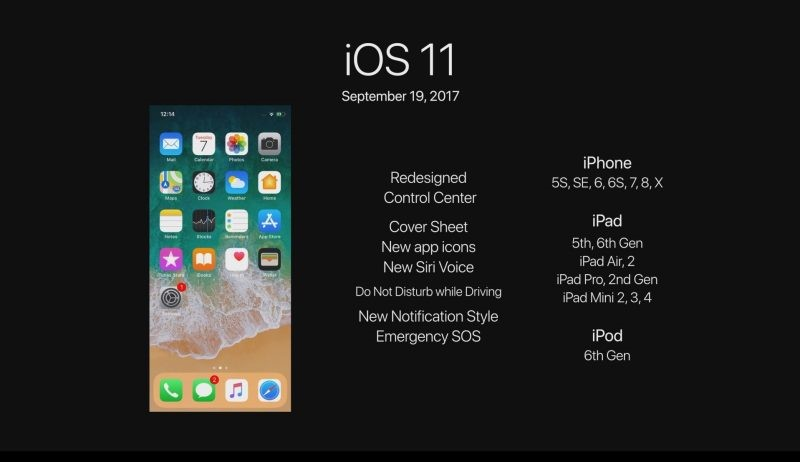
Đối với iPhone 5S, SE, 6, 6S, 7, 8, X, iPad 5 ~ 6 thế hệ Air 1 ~ 2 thế hệ Pro 1 ~ 2 thế hệ Mini 2 ~ 4, iPod 6, hệ thống âm thanh Siri mới, tín hiệu SOS và các chức năng khác.
-
17/9/2018
iOS 12
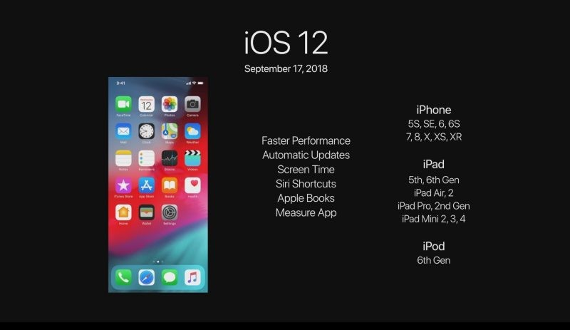
Dành cho iPhone 5S, SE, 6, 6S, 7, 8, X, XS, XR, iPad 5 ~ 6 thế hệ Air 1 ~ 2 thế hệ Pro 1 ~ 2 thế hệ Mini 2 ~ 4, iPod 6, sử dụng Bộ xử lý, hiệu năng hệ thống nhanh hơn.
Ưu điểm
iOS là một hệ điều hành với độ ổn định cao, mượt mà qua thời gian dài.
Là hệ điều hành có độ bảo mật và tin cậy cao nhất hiện nay.
Hệ điều hành được cập nhật đều đặn hàng năm, bạn được quyền lựa chọn update hoặc không. Ngoài khi cập nhật iOS bản mới, tất cả các thiết bị iOS đều được phép cập nhật lên bản cao nhất và không bị giới hạn.
Kho ứng dụng phong phú và được kiểm duyệt nghiêm ngặt, không có ứng dụng lừa đảo, ứng dụng rác.
Đơn giản, dễ sử dụng cho người mới.
Có khả năng đồng bộ tốt giữa các thiết bị iOS với nhau.
Nhược điểm
iOS hiện chỉ được tích hợp trên các thiết bị của Apple, tuy nhiên giá các sản phẩm Apple thì không hề rẻ.
Việc trao đổi dữ liệu như chép tập tin, hình ảnh, video, v.v… đều phải sử dụng phần mềm iTunes, khá bất tiện cho người mới.
Hạn chế khả năng tùy chỉnh.